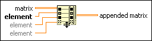

Build Matrix Function
Owning Palette: Matrix Functions
Requires: Base Development System
Appends elements to a matrix by rows or columns.
You also can use the Set Matrix Elements and Set Submatrix functions to modify an existing matrix.
The connector pane displays the default data types for this polymorphic function.

 Add to the block diagram Add to the block diagram |
 Find on the palette Find on the palette |